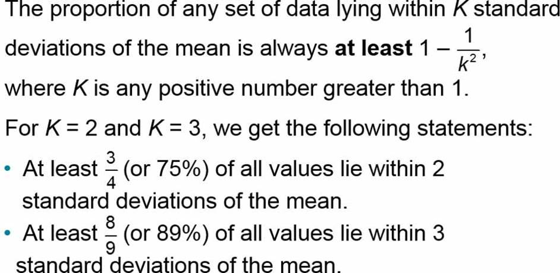
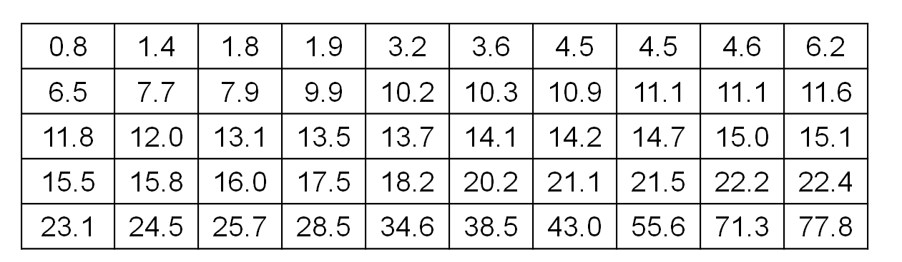
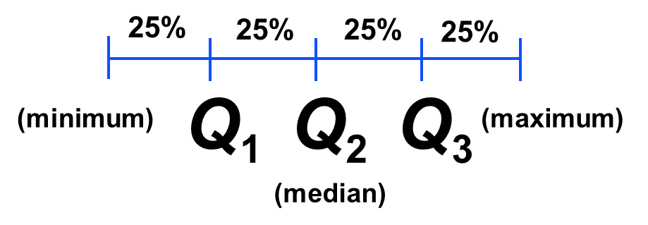
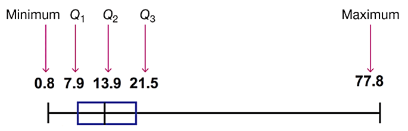
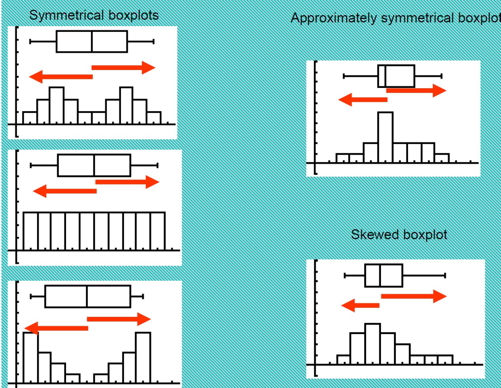
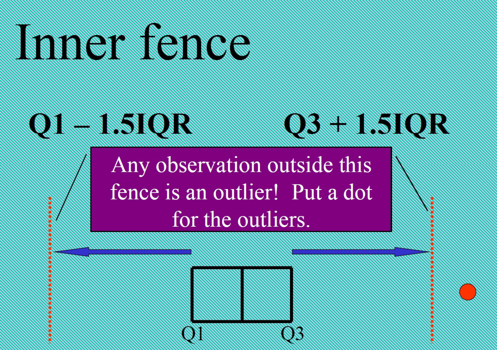

Chapter 4 Midrange
- Midrange is the value midway between the maximum and minimum values in the original data set
- \(Midrange=\frac{Maximum \enspace Value +Minimum \enspace Value}{2}\)
- Because the midrange uses only the maximum and minimum values, it is very sensitive to those extremes so the midrange is not resistant.
4.1 Round-Off Rules for Measures of Center
- For the mean, median, and midrange, carry one more decimal place than is present in the original set of values.
- For the mode, leave the value as is without rounding (because values of the mode are the same as some of the original data values).
4.2 Calculating a Weighted Mean
- When data values are assigned different weights, \(w\), we can compute a weighted mean. \[\bar{x}=\frac{\sum{(w\cdot x)}}{\sum{w}}\]
- In her first semester of college, a student of the author took five courses. Her final grades along with the number of credits for each course were A (3 credits), A (4 credits), B (3 credits), C (3 credits), and F (1 credit). The grading system assigns quality points to letter grades as follows: A = 4; B = 3; C = 2; D = 1; F = 0.
4.3 More Examples About Finding The Means
- Angelique made scores of 85, 56, and 91 on her first three statistic tests. What does she need to make on her next test to have an 80 test average?
- Mr. Plum’s math class of 25 students had an average of 85 on a test. Miss Scarlet’s class of 22 students had an average of 87 on the same test. What is the average of the two classes combined?
- Consider the time that it takes the faculty of AVC to drive to school. The mean and median times are calculated. Of the times, 40 minutes and 25 minutes, which is the mean and which is the median? Why?
4.4 Measures of Variation
Variation is the single most important topic in statistics, so this is the single most important section in this book. This section presents three important measures of variation: range, standard deviation, and variance. These statistics are numbers, but our focus is not just computing those numbers but developing the ability to interpret and understand them.
4.5 Round-off Rule for Measures of Variation
When rounding the value of a measure of variation, carry one more decimal place than is present in the original set of data.
4.6 Range
- The range of a set of data values is the difference between the maximum data value and the minimum data value.
- Range = (maximum value) - (minimum value)
- It is very sensitive to extreme values; therefore, it is not as useful as other measures of variation.
- Because the range uses only the maximum and minimum values, it does not take every value into account and therefore does not truly reflect the variation among all of the data values.
- Find the range of these Verizon data speeds (Mbps): 38.5, 55.6, 22.4, 14.1, 23.1.
4.7 Standard Deviation
- The standard deviation of a set of sample values, denoted by s, is a measure of how much data values deviate away from the mean.
- s: sample standard deviation
- \(\sigma\): population standard deviation
4.8 Formula
Sample standard deviation: \[s=\sqrt{\frac{\sum (x_i-\bar{x})^2}{n-1}}\] or \[s=\sqrt{\frac{n\sum (x_i^2)-\sum(x_i)^2}{n(n-1)}}\]
Population standard deviation \[\sigma=\sqrt{\frac{\sum (x_i-\mu)^2}{N}}\]
4.9 Interpretation of Standard Deviation
- The standard deviation is a measure of variation of all values from the mean; or a measure of how much data values deviate away from the mean.
- The value of the standard deviation s is never negative. It is zero only when all of the data values are exactly the same.
- The value of the standard deviation s can increase dramatically with the inclusion of one or more outliers (data values far away from all others).
- The units of the standard deviation s are the same as the units of the original data values.
- Larger values of \(s\) indicate greater amounts of variation.
- The sample standard deviation \(s\) is a biased estimator of the population standard deviation \(\sigma\), which means that values of the sample standard deviation \(s\) do not center around the value of \(\sigma\).
- Use sample standard deviation formula to find the standard deviation of these Verizon data speed times (in Mbps): 38.5, 55.6, 22.4, 14.1, 23.1.
4.10 Range Rule of Thumb for Understanding Standard Deviation
- The range rule of thumb is a crude but simple tool for understanding and interpreting standard deviation. The vast majority (such as 95%) of sample values lie within 2 standard deviations of the mean.
- Significantly low values are \(\mu-2\sigma\) or lower. (Minimum “usual” value = (mean) - 2 \(\times\) (standard deviation))
- Significantly high values are \(\mu+2\sigma\) or higher. (Maximum “usual” value = (mean) + 2 \(\times\) (standard deviation))
- Values not significant are between \(\mu-2\sigma\) and \(\mu+2\sigma\).

- Using the 40 chocolate chip counts for the Chips Ahoy cookies, the mean is 24.0 chips and the standard deviation is 2.6 chips.
- Use the range rule of thumb to find the minimum and maximum “usual” numbers of chips.\
- Would a cookie with 30 chocolate chips be “unusual”?
4.11 Range Rule of Thumb for Estimating a Value of the Standard Deviation s
- To roughly estimate the standard deviation from a collection of known sample data use \[s\approx \frac{Range}{4}\] where range = (maximum value) - (minimum value)
4.12 Variance of a Sample and a Population
- The variance of a set of values is a measure of variation equal to the square of the standard deviation.
- Sample variance: \(s^2\) - Square of the sample standard deviation \(s\)
- Population variance: \(\sigma^2\) - Square of the population standard deviation \(\sigma\)
- The units of the variance are the squares of the units of the original data values.
- The value of the variance can increase dramatically with the inclusion of outliers. (The variance is not resistant.)
- The value of the variance is never negative. It is zero only when all of the data values are the same number.
- The sample variance \(s^2\) is an unbiased estimator of the population variance \(\sigma^2\).
4.13 Notations
- \(s\): samle standard deviation
- \(n\): sample size
- \(s^2\): sample variance
- \(\sigma\): population standard deviation
- \(N\): population size
- \(\sigma^2\): population variance
4.14 The Empirical Rule

- IQ scores have a bell-shaped distribution with a mean of 100 and a standard deviation of 15. What percentage of IQ scores are between 70 and 130?
4.15 Chebyshev’s Theorem

4.16 Extra Example
- A list has 10 numbers. Each number is a 1, 2, or 3. The average is 2 and the SD is 0. What is the list?
4.17 Measures of Relative Standing and Boxplots
- This section introduces measures of relative standing, which are numbers showing the location of data values relative to the other values within a data set.
- They can be used to compare values from different data sets, or to compare values within the same data set.
- The most important concept is the z score.
- We will also discuss percentiles and quartiles, as well as a new statistical graph called the boxplot.
4.18 z Scores
- z-score (or standardized value) is the number of standard deviations that a given value x is above or below the mean.
- z-score of a sample data value: \(z=\frac{x-\bar{x}}{s}\)
- z-score of a population data value: \(z=\frac{x-\mu}{\sigma}\)
- Round z scores to two decimal places
4.19 Important Properties of z Scores
- A z-score is the number of standard deviations that a given value x is above or below the mean.
- z-scores are expressed as numbers with no units of measurement.
- A data value is significantly low if its z-score is less than or equal to -2 or the value is significantly high if its z-score is greater than or equal to +2.
- If an individual data value is less than the mean, its corresponding z score is a negative number.

4.20 Examples
- Suppose the mean and standard deviation of a distribution are \(\mu=50\) and \(s = 5\)
- If the x-value is 55, what is the z-score?
- If the x-value is 45, what is the z-score?
- If the x-value is 60, what is the z-score?
- So what does the z-score tell you?
- The author of the text measured his pulse rate to be 48 beats per minute. Is that pulse rate unusual if the mean adult male pulse rate is 67.3 beats per minute with a standard deviation of 10.3?
- Sally is taking two different math achievement tests with different means and standard deviations. The mean score on test A was 56 with a standard deviation of 3.5, while the mean score on test B was 65 with a standard deviation of 2.8. Sally scored a 62 on test A and a 69 on test B. On which test did Sally score the best? Why?
4.21 Percentiles
- Percentiles are measures of location, denoted \(P_1\), \(P_2\), . . . , \(P_99\), which divide a set of data into 100 groups with about 1% of the values in each group.
- The process of finding the percentile that corresponds to a particular data value x is given by the following (round the result to the nearest whole number) \[\textrm{Percentile of a data value x}=\frac{\textrm{number of values less than x}}{\textrm{total number of values}}\times 100\]
- The airport Verizon cell phone data speeds listed below are arranged in increasing order. Find the percentile for the data speed of 11.8 Mbps. 
4.22 Interpretation of Percentiles
- From the previous example: A data speed of 11.8 Mbps is in the 40th percentile. This can be interpreted loosely as this: A data speed of 11.8 Mbps separates the lowest 40% of values from the highest 60% of values. We have \(P_{40} = 11.8\) Mbps.
- Better interpretation: 40% of the data values are less than 11.8 Mbps or 60% of the data values are greater than 11.8 Mbps
- What is the percentile for the median? How would you interpret the median better?
4.23 Example from a dataset
## height ideal_ht sleep fastest
## 1 76 78 9.5 119
## 2 74 76 7.0 110
## 3 64 NA 9.0 85
## 4 62 65 7.0 100
## 5 72 72 8.0 95## 20% 50% 80% 90%
## 90 102 120 130- Interpet the meanings of the above perentiles
- About 20% of the students drove slower than 90 mph
- About 50% of the students drove slower than 102 mph (median!)
- About 80% of the students drove slower than 120 mph
- About 90% of the students drove slower than 130 mph
4.24 Notations
- n total number of values in the data set
- k percentile being used (Example: For the 25th percentile, k = 25.)
- L locator that gives the position of a value (Example: For the 12th value in the sorted list, L = 12.)
- \(P_k\) kth percentile (Example: \(P_{25}\) is the 25th percentile.)
4.25 Converting a Percentile to a Data Value
- Find L, where \(L=\frac{k}{100}\times n\)
- If L is not a whole number, round up to the next whole number and find the data value in that position. If L is a whole number, average the data values in position L and L+1. (Notes: You need to put the numbers in order from small to large first.)
4.26 Example
Refer to the sorted data speeds below. Find the 40th and 60th percentile, denoted by \(P_{40}\) and \(P_{60}\), respectively.
4.27 Quartiles
- Quartiles are measures of location, denoted \(Q_1\), \(Q_2\), and \(Q_3\), which divide a set of data into four groups with about 25% of the values in each group
- \(Q_1\) (First quartile): Same value as \(P_{25}\). It separates the bottom 25% of the sorted values from the top 75%.
- \(Q_2\) (Second quartile): Same as \(P_{50}\) and same as the median. It separates the bottom 50% of the sorted values from the top 50%.
- \(Q_3\) (Third quartile): Same as \(P_{75}\). It separates the bottom 75% of the sorted values from the top 25%.
- Different technologies often yield different results.
- 
4.28 Statistics defined using quartiles and percentiles
Just focus on the Interquartile Range (IQR)

4.29 5-Number Summary
- For a set of data, the 5-number summary consists of these five values:
- Minimum
- \(Q_1\)
- \(Q_2\) or median
- \(Q_3\)
- Maximum
4.30 Example: Finding a 5-Number Summary
Use the Verizon airport data speeds to find the 5-number summary.
4.31 Boxplot (or Box-and-Whisker Diagram)
- A boxplot (or box-and-whisker diagram) is a graph of a data set that consists of a line extending from the minimum value to the maximum value, and a box with lines drawn at the first quartile \(Q_1\), the median, and the third quartile \(Q_3\).
4.32 Procedure for Constructing a Boxplot
- Find the 5-number summary (minimum value, \(Q_1\), \(Q_2\), \(Q_3\), maximum value).
- Construct a line segment extending from the minimum data value to the maximum data value.
- Construct a box (rectangle) extending from Q1 to Q3, and draw a line in the box at the value of Q2 (median).
- Use the Verizon airport data speeds to construct a boxplot.
- 
4.33 Skewness
- A boxplot can often be used to identify skewness. A distribution of data is skewed if it is not symmetric and extends more to one side than to the other.
- 
4.34 Identifying Outliers for Modified Boxplots
- Find the quartiles \(Q_1\), \(Q_2\), and \(Q_3\).
- Find the interquartile range (IQR), where \(\textrm{IQR} = Q_3- Q_1\).
- Evaluate \(1.5\times \textrm{IQR}\).
- In a modified boxplot, a data value is an outlier if it is above \(Q_3\), by an amount greater than \(1.5\times \textrm{IQR}\) or below \(Q_1\), by an amount greater than \(1.5\times \textrm{IQR}\).
4.35 Modified Boxplot

4.36 Example
## min Q1 median Q3 max mean sd n missing
## 0.8 8.4 14 21 78 18 16 50 0
## $stats
## [1] 0.8 7.9 13.9 21.5 38.5
##
## $n
## [1] 50
##
## $conf
## [1] 11 17
##
## $out
## [1] 43 56 71 784.37 Comparative Boxplots